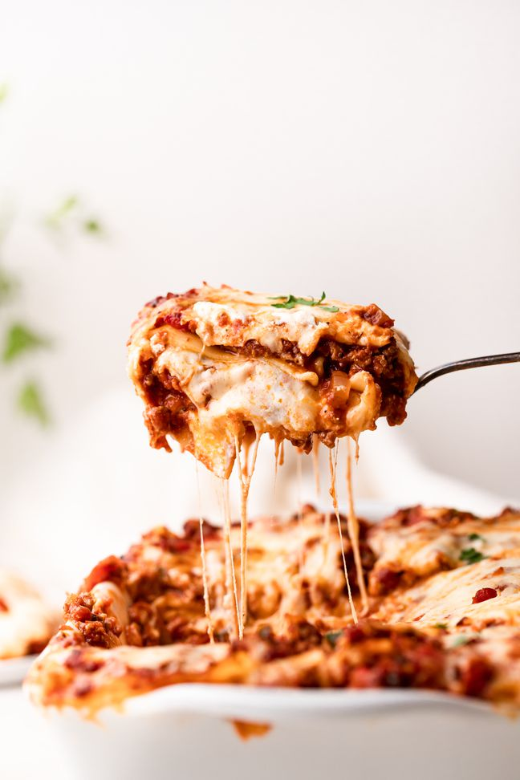

BA's Best Lasagna

Shot by Cambrea Bakes
Everyone loves a good lasagna, right? It's a great way to feed a crowd and a perfect dish to bring to a potluck. It freezes well. It reheats well. Leftovers will keep you happy for days.
Simply Recipes reader Alton Hoover sent me his favorite recipe for lasagna which he has been cooking since his college days. Alton's original recipe created enough lasagna for a small army so I halved it. What is posted here will easily serve eight people.
Ingredients
For Meat Sauce
- 2 teaspoons extra virgin olive oil
- 1 pound ground beef chuck
- 1/2 medium onion, diced (about 3/4 cup)
- 1/2 large bell pepper (green, red, or yellow), diced (about 3/4 cup)
- 2 cloves garlic, minced
- 1 (28-ounce)acan good-quality tomato sauce
- 3 ounces tomato paste
- 1 (14 ounce can crushed tomatoes)
- 2 tablespoons chopped oregano, or 2 teaspoons dried oregano
- 1/4 cup chopped fresh parsley
- 1 tablespoon Italian seasoning
- 1 pinch garlic powder and/or garlic salt
- 1 tablespoon red or white wine vinegar
- 1 tablespoon to 1/4 cup sugar
- salt
To assemble the lasagna
- 1/2 pound dry lasagna noodles (requires 9 lasagna noodles -unbroken)
- 15 ounces ricotta cheese
- 1 1/2 pounds (24 ounces) mozzarella cheese, grated or sliced
- 1/4 pound (4 ounces) freshly grated Parmesan cheese